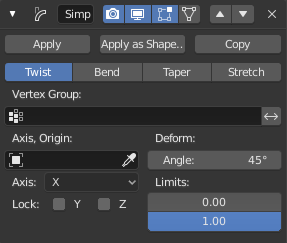

简单变形修改器¶
简单变形修改器用于对一个物体(支持网格、晶格、曲线、曲面和文本)应用简单的形变。
用另外一个物体当形变的原点和轴向，可以产生很不一样的效果。
选项¶

简单变形。¶
- 模式
列表显示可应用的四个变形函数。
- 扭曲
绕着Z轴方向旋转。
- 弯曲
在Z轴方向弯曲。
- 锥化
沿着Z轴方向线性缩放。
- 拉伸
沿着Z轴方向线性伸展（负的 系数 产生压挤效果），并通过X、Y轴反方向上的缩放保持体积不变。
- 顶点组
顶点组的名称，用来指示是否受变形影响以及各个顶点影响多少。
- 原点
定义变形原点的物体名称（通常为空）。该物体可以为：
旋转以控制轴向（局部的Z轴用作变形轴）。
平移以控制变形的参考点。
缩放以改变变形的因子。
Note
当控制参考点（填入 参考点 域的东西）的物体是变形物体的子节点时，将在Blender的数据系统里产生循环依赖，解决方案是创建一个新的空物体，并都以之为父节点。
- 角度、因子
变形量，可以取负值以达到相反的形变效果。
- 限制
这些设置用于设置变形的上限和下限。上限不得低于下限。
- 锁定X/Y轴(仅锥化模式与拉伸模式)
该选项控制X和/或Y轴坐标是否发生改变。你可以压挤物体的X轴坐标的同时，保持Y轴坐标不变。